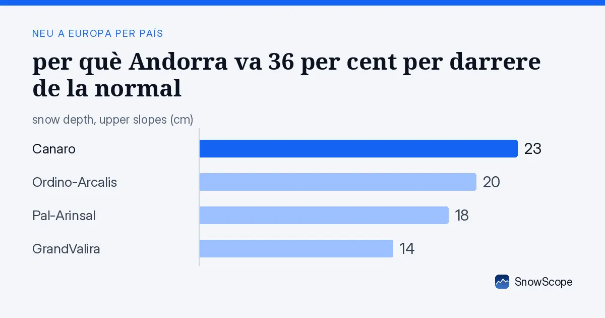

Canaro té 23 cm: per què Andorra va 36 per cent per darrere de la normal
Canaro té 23 cm de neu avui, només el 64 per cent del que les muntanyes solen tenir en aquesta data. Els últims tres dies van deixar 16 cm a l'estació, però Andorra segueix sent una tercera part per sota de la normal—un recordatori que la neu de principis de temporada és prima i fràgil.
Consulta la previsió de neu per a Canaro a l'aplicació SnowScopeGruix de neu, avisos i mapa 3D, gratis.
Per què Canaro va per darrere de la normal
La profunditat de neu a Canaro conta una història clara. Amb 23 cm, l'estació és 13 cm per sota de la mitjana de novembre de 36 cm. Aquest dèficit reflecteix dues coses: la temporada va arribar tard, i la cobertura de neu a Andorra només va començar a construir-se durant l'última setmana. Fa una setmana, Canaro gairebé no tenia neu; avui en té només dos tercis de l'aigua que hauria d'emmagatzemar en aquesta època de l'any.
La comparació importa per als gestors de reserves i els planificadors de recursos hídrics riu avall. Quan la neu arriba tard i es manté prima, la fusió primaveral alimenta els rius més tard i amb menys volum. Ara mateix, els pics més alts d'Andorra emmagatzemen uns 10 cm de neu de mitjana per sobre dels 2500 m, però les pistes més baixes romanen gairebé nues.
| Resort | Today | Normal for the date | Share of normal |
|---|---|---|---|
| Canaro | 23 cm | 36 cm | 64 % |
| Ordino-Arcalis | 20 cm | 22 cm | 91 % |
| Pal-Arinsal | 18 cm | 20 cm | 90 % |
| GrandValira | 14 cm | 16 cm | 88 % |

Com Andorra es compara amb la normal
Les quatre estacions andorranes van curtes de les seves profunditats normals de novembre. Ordino-Arcalis té 20 cm enfront dels típics 22 cm, Pal-Arinsal en té 18 cm envers 20 cm, i GrandValira és a 14 cm en lloc de 16 cm. Només Ordino-Arcalis està gairebé a la paritat; les altres van 10 a 20 per cent per darrere.
Per tot el país, el 84 per cent de la zona mapeada ara té cobertura de neu—un salt dramàtic des del 5 per cent que hi havia fa una setmana. Aquest creixement ràpid amaga un problema més profund: el mantell de neu és prim i concentrat en altitud alta. Per sota dels 2000 m, la majoria de pistes són nues. La línia de neu se situa als 1600 m, deixant les estacions més baixes vulnerables a qualsevol desgel.

Què portaran els próxims tres dies
La neu fresca serà modesta. Canaro hauria de rebre només 1 cm durant els próxims tres dies, Ordino-Arcalis 2 cm, i les estacions més baixes uns 1 cm cada una. El dia més nevat que ve és el 3 de desembre, amb 2 cm possibles a parts d'Andorra. Aquest degoteig no tancarà la bretxa amb la normal.
La perspectiva més llarga—dies 8 a 14 per endavant—suggereix més neu substancial, amb fins a 18 cm possible. Aquesta finestra ofereix una oportunitat per construir el mantell, però fins aleshores Andorra romandrà on està ara: magra, amb neu de principis de temporada enganxada als pics alts.
Profunditat de neu per altitud
L'elevació ho determina tot ara mateix. Per sobre dels 2500 m, la neu mitjana és 10 cm i cobreix cada pista. Entre 2000 i 2500 m, és de 9 cm de mitjana i és gairebé completa. Però la història es trenca més avall: entre 1500 i 2000 m, només 4 cm reposten al 86 per cent de la zona, i per sota dels 1500 m, el sòl nu domina amb només el 6 per cent de cobertura blanca.
Per als esquiadors, això significa esquiar sobre neu prima a les pistes mitjanes i trobar roca i vegetació sota. Els pics superiors ofereixen el terreny més segur, però les profunditats segueixen sent modestes. Cada centímetre compta quan la base és tan fràgil.
On trobar la millor neu ara
Canaro encapçala Andorra amb 23 cm, mantenint el seu avantatge gràcies als 16 cm de neu nova dels últims tres dies i la seva altitud de 2500 m. Ordino-Arcalis el segueix amb 20 cm i se situa més alt als 2626 m; també va rebre 20 cm de neu fresca durant tres dies, fent-la competitiva. Els pics andorrans com a grup van rebre fins a 20 cm durant aquest període, així que el terreny alt és on és l'aigua.
GrandValira, la més baixa de les quatre, té només 14 cm. Serà la última en consolidar-se i la primera en patir si les temperatures pugen. Pal-Arinsal, amb 18 cm, cau entre els dos líders i l'estació de la vall.
La setmana que va construir la base
Fa una setmana, Andorra gairebé no tenia neu. El 25 de novembre, les muntanyes tenien 420 km² de blanc—un salt impulsat per una banda de tempestes que va creuar la regió. La cobertura de neu es va reduir lleugerament a 400 km² el 26 de novembre mentre el sistema s'alleugerava, després es va assentar als 370 km² avui mentre una mica de neu es consolidava o es fonia a elevacions més baixes.
Canaro es va mantenir constant prop de la part superior d'aquesta tendència, baixant i recuperant-se a mesura que el temps canviava. Aquesta volatilitat és normal per a novembre: la neu de principis de temporada té un enllaç dèbil i és sensible als petits canvis de temperatura. La bona notícia és que l'aire fred està en place. El repte és que no hi ha gaire neu encara per protegir.
Consells per a esquiadors
- Manteniu-vos a pistes per sobre dels 2000 m on la neu és contínua. Per sota d'aquesta altitud, les clots nues i les roques són comunes, i la neu és prima.
- Canaro i Ordino-Arcalis ofereixen les bases més profundes i estables; planejau les vostres baixades pel seu terreny superior primer.
- Principis de temporada significa un enllaç feble i estabilitat variable. Consulteu el butlletí oficial d'allaus abans de deixar les pistes marcades.
- Espereu desgel durant els dies càlids, especialment a les pistes exposades al sud i per sota dels 2000 m. Esquiau de bon matí i a l'altura.
- Atent a la previsió per a la setmana del 5 a l'11 de desembre; si els 18 cm arriben com suggereix el rang, el mantell es fortirà ràpidament.
About these numbers
Resort snow depths are the deepest snow on the resort's upper slopes on the date shown; they are estimates for an area, not a measurement at one point. Forecasts can change. Always read the official avalanche bulletin before going off-piste.
Cite this report
For research, teaching or the press: the numbers and charts are free to reuse under CC BY 4.0 with this citation.
SnowScope (2026), Canaro té 23 cm: per què Andorra va 36 per cent per darrere de la normal, https://snowscope.app/blog/ca/2026/11/andorra-snow-behind-normal-27-november-2026.html, accessed 2026-11-27
SnowScope (Atlas Labs). (2026, November 27). Canaro té 23 cm: per què Andorra va 36 per cent per darrere de la normal. SnowScope snow reports. https://snowscope.app/blog/ca/2026/11/andorra-snow-behind-normal-27-november-2026.html
BibTeX
@misc{snowscope2026andorrasnowbehindnormal2,
author = {{SnowScope (Atlas Labs)}},
title = {Canaro té 23 cm: per què Andorra va 36 per cent per darrere de la normal},
year = {2026},
month = nov,
howpublished = {\url{https://snowscope.app/blog/ca/2026/11/andorra-snow-behind-normal-27-november-2026.html}},
note = {Published 2026-11-27 16:38 UTC; accessed 2026-11-27}
}· CC BY 4.0 · Methods, data and tools →
Canaro: snow and temperature by height, this winter vs last (tools) →
Follow Canaro
Gratis: un missatge quan arriba neu nova i la previsió cada matí.